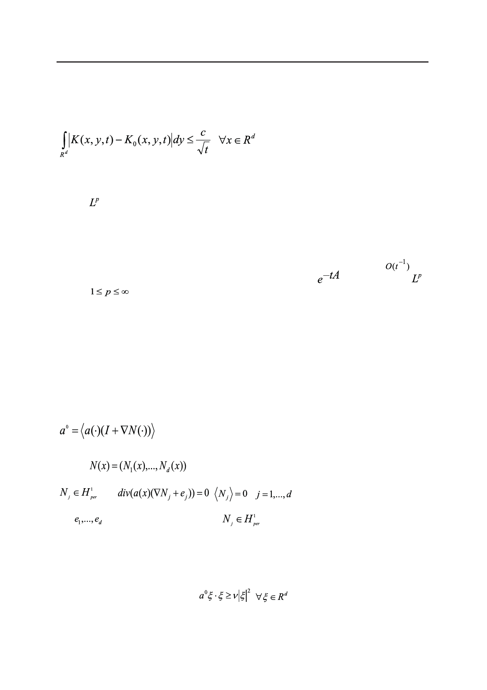

Асимптотика решения уравнения диффузии в периодической среде на больших временах
и ее применение к оценкам усреднения
Из поточечных оценок типа (7) с помощью общих соображений (к ним относится, в
частности, экспоненциальная оценка Нэша-Аронсона ([6], гл. II) получается интеграль-
ная оценка
,
(9)
которая имеет ключевое значение для эффективного описания диффузии в рассматрива-
емой среде. Из нее на основе леммы Шура об оценке интегрального оператора [7] полу-
чается – оценка (6). Интегральная оценка (9) доказана в работе В.В. Жикова [2] 1989
года (см. так же более подробное доказательство её в недавней работе [5]). Естественно
поставить вопрос о более точных интегральных оценках, которые отвечают не нулевому,
а следующим приближениям для фундаментального решения K.
Цель настоящей работы – построить и обосновать приближение K1(x,y,t) для фунда-
ментального решения K(x,y,t) с погрешностью в интегральной норме порядка
при
t → +∞ и на его основе найти приближение для полугруппы
в операторной –
норме (
) того же порядка точности при большом значении времени. Основные
результаты сформулированы в теоремах 1 и 2.
Для доказательства наших результатов используем предложенную в [2] версию
спектрального метода, в основе которой лежит блоховское разложение функций и бло-
ховское представление операторной экспоненты, точнее, ядра операторной экспоненты,
рассматриваемой как интегральный оператор. Этот метод подробно изложен в [5].
Раздел 1
Приведём формулы для определения усредненной (или эффективной) матрицы диф-
фузии:
,
(10)
где I – единичная матрица;
вектор
составлен из решений задач на ячейке
(□),
,
,
.
(11)
где
– канонический базис в Rd;
(□) - пространство Соболева 1-периоди-
ческих функций, а угловыми скобками обозначено среднее периодической функции по
ячейке □.
В теории усреднения хорошо известно, что матрица (10) симметрична и удовлетво-
ряет оценке
с той же константой, что в (2) [6, 8].
64
Российский технологический журнал 2017 Том 5 № 5